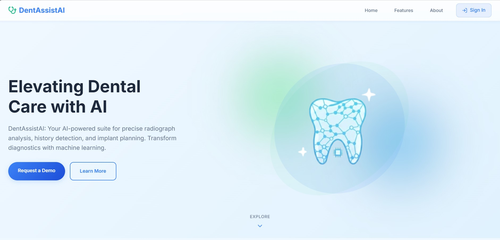

I design and build intelligent digital products combining artificial intelligence, modern web technologies, and intuitive user experiences.
Hi! I'm Maryam Farooq, a Computer Science student passionate about building intelligent systems and modern web applications. My interests lie in artificial intelligence, machine learning, computer vision, and scalable full-stack development. I enjoy transforming complex problems into practical solutions through clean code, data-driven models, and thoughtful design.
Building modern full-stack applications using React, Node.js, and scalable backend architectures.
Developing intelligent models, deep learning systems, and computer vision applications.
Designing secure APIs and efficient databases using MongoDB and PostgreSQL.
Creating intuitive user experiences and modern digital interfaces.

An AI-powered system that assists dentists by analyzing dental X-rays and identifying potential oral health issues using computer vision.
To build an intelligent diagnostic assistant that helps dentists analyze X-ray scans faster and detect patterns that may be difficult to observe manually.
Implemented deep learning models for image segmentation and object detection, enabling the system to highlight critical areas in dental radiographs and support clinical decision-making.
A modern web platform designed to help users discover, organize, and explore recipes through an intuitive and interactive interface.
To create a centralized platform where users can easily search recipes, explore cooking ideas, and manage ingredients efficiently.
Built a responsive full-stack application with dynamic recipe search, scalable backend architecture, and a user-friendly interface for browsing recipes.